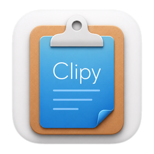

A clipboard history app for macOS.
Clipy2 is a small menu bar application for keeping clipboard history on macOS. When you copy something, Clipy2 can keep it in a local history so you can bring it back later.
It also supports snippets. Snippets are reusable pieces of text that you paste often, such as links, signatures, templates, commands, or short replies.
Clipy2 is a modernized fork of Clipy. It keeps the basic idea simple: clipboard history, snippets, keyboard shortcuts, and a menu bar interface.
Screenshots will go here later. Add image files to
docs/assets/ and replace these boxes with
<img> tags.